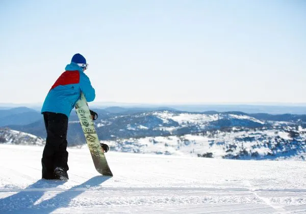
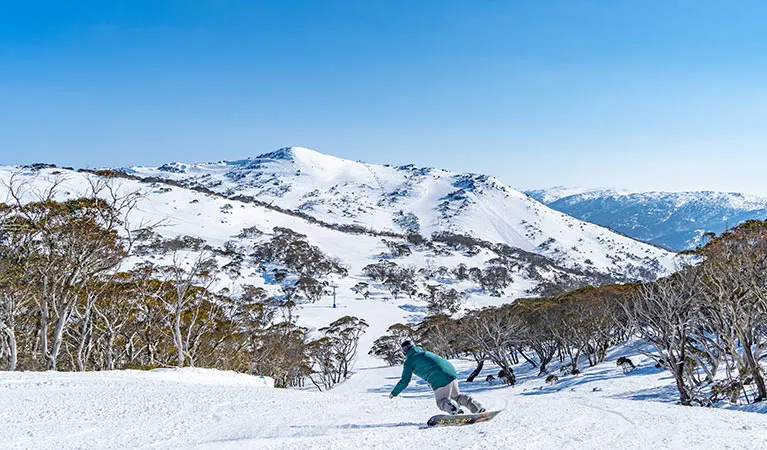

Your adventure starts here. Discover breathtaking destinations and unforgettable experiences.
Learn More


Traveling always opens up new horizons and experiences. I love exploring new cities, walking through quiet streets, and photographing unusual places. Every adventure leaves its own memories and inspires new ideas.
Mountains have always held a special place in my heart. There's nothing like the crisp air, breathtaking views, and the thrill of snowboarding down fresh powder. Snowboarding lets me connect with nature and feel truly alive, making every trip to the mountains unforgettable.